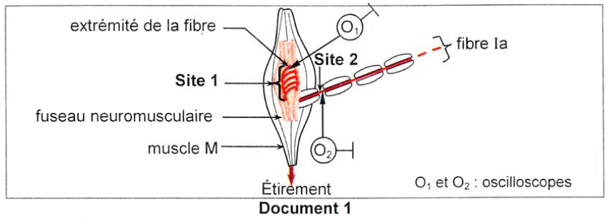
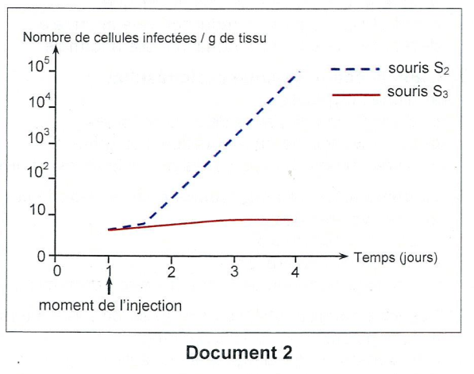
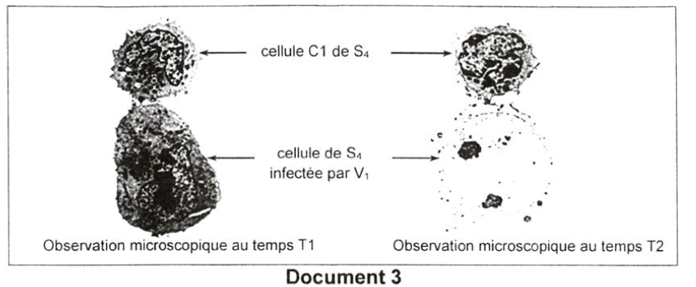
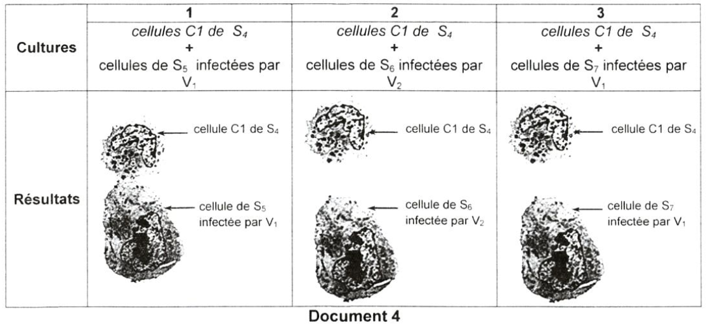
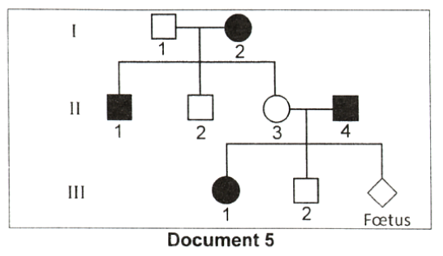
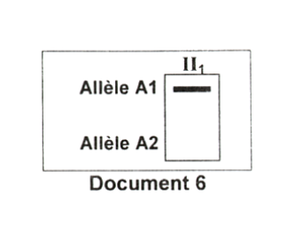
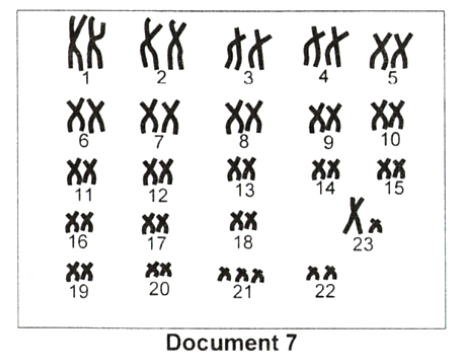
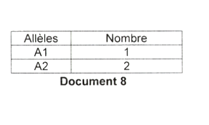

Sciences de la Vie
et de la Terre
Session Principale 2021 — Épreuve officielle simulée
Clique sur chaque verbe pour comprendre ce qu'attend le correcteur.
⚠️ Décrire sans interpréter = 0 pt.
⚠️ Nommer sans expliquer = incomplet.
⚠️ Affirmer sans justifier = non recevable.
⚠️ Rédiger un paragraphe entier = perte de temps.
⚠️ Ignorer les documents = hors sujet.
⚠️ Pas de légende = 0 pt.
Ce que tu dois savoir
Notions ciblées pour cette épreuve uniquement
Le fuseau neuromusculaire (FNM) : C'est un récepteur sensoriel situé à l'intérieur des muscles. Il est constitué de fibres intrafusales (spécialisées) et de terminaisons nerveuses afférentes (fibre Ia). Le FNM est sensible à l'étirement du muscle.
Site 1 – Site transducteur : Lorsque le muscle est étiré, les fibres intrafusales se déforment. Cette déformation mécanique ouvre des canaux ioniques (mécanosensibles) au niveau du site 1, ce qui provoque une entrée d'ions Na⁺ et une dépolarisation locale : c'est le potentiel de récepteur. Ce potentiel est gradué (son amplitude dépend de l'intensité de l'étirement).
Site 2 – Site générateur : Le potentiel de récepteur se propage électrotoniquement (en décrément) jusqu'au site 2. Si son amplitude atteint le seuil (environ -50 mV), il déclenche un potentiel d'action (PA). Le PA est un message nerveux de nature tout-ou-rien qui se propagera le long de la fibre Ia.
Propagation saltatoire : La fibre Ia est une fibre nerveuse myélinisée. La gaine de myéline agit comme un isolant électrique, ce qui force le PA à "sauter" d'un nœud de Ranvier à l'autre. Entre les nœuds, la propagation se fait par des courants électriques locaux. Ce mode de propagation, appelé propagation saltatoire, est plus rapide et plus économique en énergie que la propagation continue (dans les fibres non myélinisées).
المغزل العصبي العضلي هو مستقبل حسي موجود في العضلات. يؤدي شد العضلة إلى تشوه الألياف الداخلية وفتح قنوات أيونية، مما يولد جهد مستقبل (PR) عند الموقع 1. إذا بلغ هذا الجهد العتبة، ينشأ جهد عمل (PA) عند الموقع 2 وينتشر على طول الألياف العصبية. في الألياف الميالينية، يحدث الانتشار على شكل قفزات بين عقد رانفييه (الانتشار الملحي)، وهو أسرع وأقل استهلاكاً للطاقة.
Réponse immunitaire à médiation humorale (RIMH) : Cette réponse fait intervenir les lymphocytes B (LB) qui maturent dans la moelle osseuse. Lorsque les LB reconnaissent un antigène (via leurs immunoglobulines de surface), ils se différencient en plasmocytes qui sécrètent des anticorps. Les anticorps neutralisent les antigènes et facilitent leur élimination (opsonisation).
Réponse immunitaire à médiation cellulaire (RIMC) : Cette réponse fait intervenir les lymphocytes T cytotoxiques (LTC). Les LTC reconnaissent les cellules infectées grâce au complexe CMH I associé aux peptides du non-soi. Après reconnaissance, les LTC libèrent des perforines qui créent des pores dans la membrane de la cellule cible, permettant l'entrée d'eau et d'enzymes protéolytiques → lyse cellulaire.
Spécificité et mémoire : La réponse immunitaire est spécifique : un lymphocyte ne reconnaît qu'un seul antigène (via son TCR ou ses immunoglobulines). Elle est également mémorisée : après une première rencontre, des cellules mémoire (LB mémoire et LT mémoire) persistent, permettant une réponse plus rapide et plus efficace lors d'une seconde rencontre avec le même antigène.
الاستجابة المناعية الخلطية تشارك فيها الخلايا الليمفاوية B (LB) التي تنضج في نخاع العظم، وتفرز أجساماً مضادة تعادل المستضدات. أما الاستجابة المناعية الخلوية فتشمل الخلايا الليمفاوية T السامة (LTC) التي تقتل الخلايا المصابة عبر إطلاق البيرفورين. تتميز كلتا الاستجابتين بالنوعية (كل خلية تتعرف على مستضد واحد) والذاكرة (احتفاظ الجسم بالمعلومات المناعية).
Arbre généalogique : Un outil qui permet de suivre la transmission d'un caractère héréditaire (maladie, trait) au sein d'une famille. Les symboles utilisés : carré pour un homme, cercle pour une femme, symbole noir pour un individu atteint.
Électrophorèse : Technique de séparation des molécules (ADN, protéines) selon leur taille et leur charge. Dans le cas des allèles A₁ et A₂, la présence d'une bande indique la présence de l'allèle. L'absence d'une bande signifie que l'allèle est absent.
Trisomie 21 : Anomalie chromosomique due à la présence de trois exemplaires du chromosome 21 (au lieu de deux). Elle résulte le plus souvent d'une non-disjonction au cours de la méiose (anaphase I ou II). Le caryotype permet de détecter cette anomalie.
شجرة النسب هي أداة لتتبع انتقال صفة وراثية داخل الأسرة. يسمح الرحلان الكهربائي بفصل الأليلات (A₁ و A₂) حسب حجمها وشحنتها. متلازمة داون (تثلث الصبغي 21) هي اضطراب صبغي ناتج عن وجود ثلاث نسخ من الصبغي 21، ويتم اكتشافها بواسطة النمط النووي.
Ministère de l'Éducation
EXAMEN DU BACCALAURÉAT
Pour chacun des items suivants (de 1 à 8), il peut y avoir une (ou deux) réponse(s) correcte(s). Reportez sur votre copie le numéro de chaque item et indiquez dans chaque cas la (ou les deux) lettre(s) correspondant à la (ou aux deux) réponse(s) correcte(s).
NB : toute réponse fausse annule la note attribuée à l'item.

doc1-fuseau.png

doc2-immunite.png

doc3-microscope.png

doc4-cultures.png

doc5-arbre.png

doc6-electrophorese.png
a- précisez lequel des deux allèles est responsable de la maladie.
b- discutez les hypothèses suivantes : H₁ (récessif autosomal), H₂ (récessif lié à l'X), H₃ (dominant autosomal), H₄ (dominant lié à l'X).

doc7-caryotype.png

doc8-alleles.png
Pour chacun des items suivants (de 1 à 8), il peut y avoir une (ou deux) réponse(s) correcte(s). Reportez sur votre copie le numéro de chaque item et indiquez dans chaque cas la (ou les deux) lettre(s) correspondant à la (ou aux deux) réponse(s) correcte(s).
NB : toute réponse fausse annule la note attribuée à l'item.